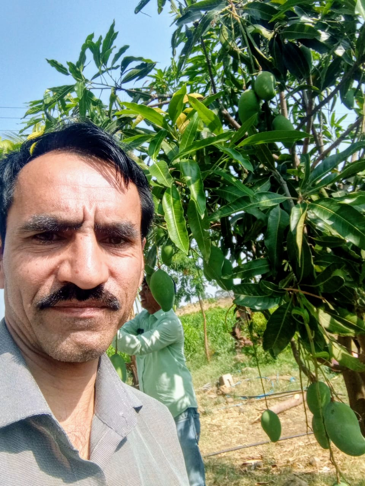

Growing tomorrow's farms, the organic way.
From the mango orchards of Nanded to farms across the globe — we help growers move to sustainable, certified organic practices.
Vision, mission & values
Sustainable farming, everywhere
To provide sustainable farming across the globe and promote organic processors and handlers with recognised external training for important standards.
Support every grower
To equip farmers and processors in and around Nanded with the products, guidance and market access they need to farm organically and profitably.
Trust, soil & transparency
We work close to the land — honest sourcing, fair pricing and long-term relationships with the farmers and processors we serve.

Harshal Jain
Founder, G-Next Organics Sales & Services Pvt. Ltd.Harshal spends as much time in the orchards as he does at his desk. G-Next Organics was started with one goal in mind — bring credible, well-tested organic inputs and know-how to farmers who are ready to move away from chemical-heavy farming, without losing yield or income along the way.
Under his leadership, the company works directly with growers around Nanded, connecting them with organic products, sound agronomic advice and the training needed to meet recognised external certification standards.
Rooted in Nanded, growing outward
G-Next Organics Sales and Services Private Limited is based in Nanded, Maharashtra, working at the intersection of organic input supply and farmer support services. We source and supply organic fertilisers, bio-inputs and farm consumables, while also guiding processors and handlers through the training needed for recognised organic certification.
Since opening in January 2026, our focus has stayed simple — help more farms make the switch to organic, and help those already farming organically do it to a recognised, exportable standard.
- CompanyG-Next Organics Sales and Services Private Limited
- Registered officeNTC Mill Road, Nanded – 431601, Maharashtra
- GSTIN27AAMCG7194C1ZB
- Operating since23 January 2026